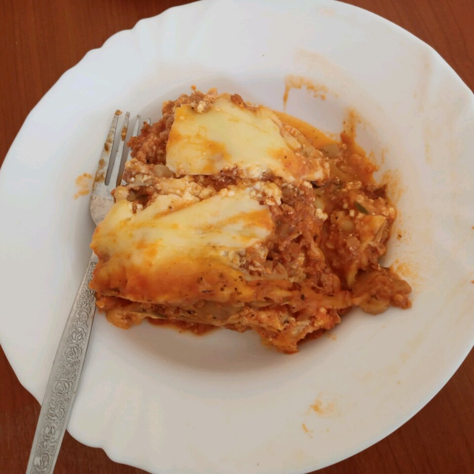

Lasagna

Description
This is a classic receipe to make a tasty Lasagna!
It is a good choice when you have guests and
also when you feel like having that batch of comfort food that you need.
The receipe requires the italian sausage (can be the hot one or the regular one)
and some patience for the long cooking time. Leftovers are delicious when reheated!
Ingrediets
- 9 lasagna noodles
- 1 tablespoon of olive oil
- 500g of ground beef
- 500g of bulk italian sausage
- 1 can of sliced mushrooms (drained)
- 1 teaspoon of garlic salt
- 1 teaspoon of dried oregano
- 1/2 teaspoon of dired thyme
- 1/4 teaspoon of dried basil
- 4 cans of tomato sauce
- salt and pepper to taste
- 400 grams of ricotta cheese
- 3 eggs, beaten
- 1/3 cup of grated Parmesan cheese
- 500 grams of shredded mozzarella cheese
Steps
- Preheat the oven to 175 degrees C
- Bring a large pot of lightly salted water to a boil.
Add the lasagna noodles and olive oil;
cook until al dente, 8 to 10 minutes; drain.
- Cook the ground beef and sausage in a large pot over medium heat;
drain. Stir in the mushrooms, garlic salt, oregano, thyme, basil,
and tomato sauce. Season with salt and pepper;
simmer 30 minutes.
- Meanwhile, mix together the ricotta cheese, eggs,
and Parmesan cheese in a bowl.
- Ladle enough of the meat sauce into a 9x13 inch baking dish to cover
the bottom in a thin layer. Form a layer atop the sauce with 3 of the
lasagna noodles. Spread about 1/4 of the ricotta cheese mixture over the noodles.
Sprinkle about 1/3 of the mozzarella cheese over the ricotta cheese mixture
and then ladle about 1/3 of the meat sauce over the mozzarella cheese.
Repeat layering twice more, topping with the remaining
1/4 pound of mozzarella cheese.
- Bake in preheated oven 90 minutes.
Allow to sit 10 to 15 minutes before serving.